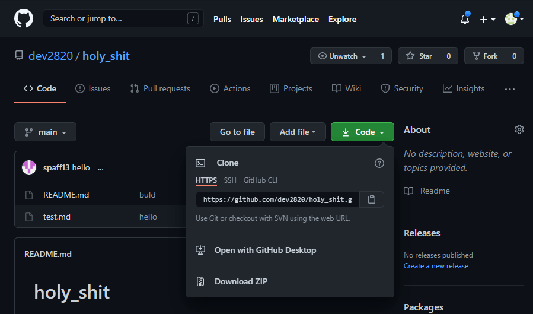

시작하기전에
시작하기전 아주 간단하게 git을 설명해봅시다.
git: 소스코드 버전관리 소프트웨어
github: 소스코드 원격저장소, 소스코드 원격 호스팅 서비스
로컬저장소에서 git으로 소스코드를 관리하고 github로 업로드 하는 형식으로 이용합니다. 업로드하는 저장소는 github가 아니여도 gitlab 등등 git과 연동되는 소스코드 원격저장소이면 됩니다.
로컬 저장소 생성하기
Git의 새로운 저장소를 생성할 때는 보통 다음 3가지 상태 중 하나로 시작합니다.
- 원격저장소의 소스코드 복사본
- 기록되지 않은 파일을 가진 로컬 폴더
- 빈 폴더
1번의 경우 forking은 생략하고 cloning만 설명하겠습니다. forking은 나중에 다룰 예정
clone: 원격저장소의 소스코드를 복사하기
내 원격저장소에 저장된 소스코드를 로컬 저장소로 복사해오는 경우를 cloning이라 합니다. 내 로컬 저장소(PC)에 클론이 생기는거죠.
 위 그림처럼 기존의 github의 프로젝트엔 clone할 수 있는 url이 있습니다. 복사하고 cloning을 해봅시다.
위 명령을 수행하면 명령을 수행한 위치에 폴더가 생성되면서 원격저장소에 저장된 프로젝트의 내용물을 복사합니다.
init: 폴더를 git의 감시하에 두기
그럼 기록되지 않은 파일을 가진 로컬 폴더(2번), 또는 아에 프로젝트를 시작하는 경우(3번)엔 로컬 git 저장소는 어떻게 시작하면 될까요.
먼저 프로젝트로 사용할 폴더를 만듭시다.
그 다음 폴더를 init명령으로 초기화 해줍니다.
|
|
init명령은 git이 init된 폴더를 git 저장소로 지정하고 관리하도록 만드는 명령입니다.
앞서 clone해서 만든 저장소의 경우 자동으로 git 저장소로 지정됩니다. 따라서 프로젝트를 cloning한 뒤, init해줄 필요는 없습니다.
init명령이 일어나면 git은 .git이라는 폴더를 생성합니다. (윈도우는 숨겨진 파일로 생성됩니다.) 이 .git폴더가 앞으로의 소스코드 버전 저장 및 설정들을 저장하는 폴더가 됩니다. .git 폴더를 지우면 저장소는 일반 폴더로 돌아옵니다.
마치며
다음 글에선 add,commit, 그리고 history에 대해 다뤄보겠습니다.